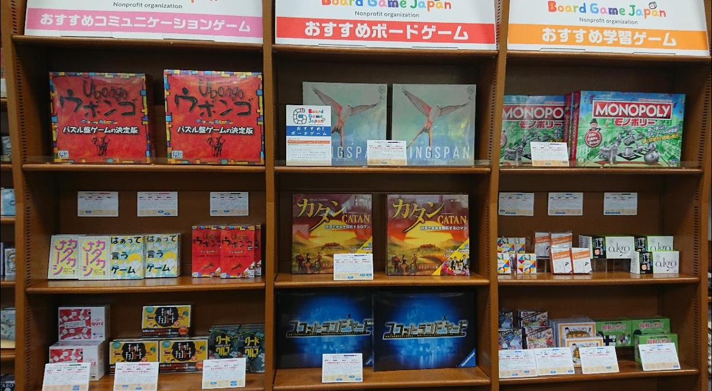

Top
NPO法人Board Game Japanは、学習要素を含むボードゲームの開発と、ボードゲームの開発・振興・研究に向けたプラットフォームの構築を行っています。
2022/3に開催された京都SDGsゲームショウで収集した、SDGsに関するゲームの情報をまとめたアーカイブサイトを公開しました! イベント自体は終了しましたが、コンテンツは今後も継続して更新予定です。
2020/10/5(月)より、MARUZEN＆ジュンク堂書店 梅田店(阪急梅田駅近く)の1Fにて、Board Game Japan推薦ボードゲームの販売を開始しました!
店頭入荷分には限りがありますので、品切れの場合もございます。各製品の在庫状況については、直接店舗までお問い合わせください(本企画は2021年秋に終了しました)。

最新情報
About us
NPO法人Board Game Japanの概要です。
設立趣旨
正解のない問題に向き合い、自ら答えを導き出す能力が問われる時代となった現代において、教育ツールとしての玩具は数多く開発され出版されている。
近年は国内においても、他者とのコミュニケーション力や論理的思考力を身につけるためのツールとして、あるいは最新の科学研究や社会・経済の仕組みなどを一般の人に広く伝える媒体として、ボードゲーム*の可能性に注目が集まっている。かく言う私たちも、ここ数年、教育や研究の現場におられる方々とともに、いくつかのゲームの開発に携わってきた。
しかしながら、ボードゲーム大国と言われるドイツなどと比較すると、国内での開発・振興はまだ途上にあると言わざるを得ない。
例えばスポーツの野球やサッカーであれば、子どもの頃から参加できる少年野球チームやサッカーチームが全国に存在することや、高校でそれぞれ約17万人と言われる競技人口の厚みがあることが、世界に通用するレベルのプロ選手たちが育つ環境を支えている。
ボードゲームに関しても、私たちが期待している教育的効果があるならば、より多くの子どもたちに親しんでもらい国内のボードゲーム人口を増やすことが、世界レベルの研究者、デザイナー、クリエイター、プログラマー、科学コミュニケーターなどの輩出に寄与すると考えられる。もちろん、それ以外のさまざまな仕事に就く人たちにとっても、子どもの頃からコミュニケーション力や論理的思考力を身につけることは非常に有意義である。
現在の教育システムや子育て環境の中では、個人や幾人かのグループだけで開発されたゲームは世の中に浸透しにくい。そこで私たちは、主に学習要素を含むゲームの開発・振興・研究を目的としたプラットフォーム組織を作ることで、日本のボードゲーム人口を増やすとともに、日本発のボードゲームを世界に広めていきたいと考え、ここにNPO法人を設立する。
* ここでの「ボードゲーム」はカードゲームなども含むアナログゲームの総称として広義で使用している
設立までの経緯
平成29年1月に発起人が呼びかけを行い、これに賛同者が集まって法人化の方向性を決め、平成29年1月28日の設立総会を経て、法人化の意思を確認した。
とらとら将棋
「とらとら(虎々・虎拳)将棋」は、日本の伝統的なお座敷遊び・お茶屋遊びである「とらとら」を元に作られたボードゲームです。

概要
「とらとら」は、一般的には「加藤清正の虎退治」や「和籐内の虎退治」とも呼ばれる、近松門左衛門の浄瑠璃「国性爺合戦」から誕生した拳遊びで、日本の伝統的なお座敷遊び・お茶屋遊びとして知られています。
「とらとら」では、まず対戦する双方が屏風の裏に隠れます。その後、音頭に合わせて、[清正の槍(または和籐内の鉄砲)][虎][(清正の母親の)老婆]の3つの型のいずれかの格好をしながら屏風から出て来て、双方の型の組み合わせで勝敗を決めます。
勝敗は、[グー][チョキ][パー]のジャンケンと同様の「3すくみ」の関係性で決まります。
清正は虎を退治するので、[清正の槍]は[虎]に勝ちます。虎は老人より強いので、[虎]は[老母]に勝ちます。
そして、[老婆]は自分の息子である[清正の槍]に勝つという関係性で、勝敗を決します。
「とらとら」を基に開発した「とらとら将棋」では、よりゲームを楽しむために[忍者]と[芸者]を追加し、[清正][忍者][虎][芸者][老婆]の5つの駒でゲームを行います。これらの5種類の駒を将棋盤を模した盤上に並べ、駒を動かしてゲームを行います。
勝敗の決め方
駒同士の勝敗は、次の関係性で決します。
- [清正]は[忍者]と[虎]に勝ちます。
- [忍者]は[虎]と[芸者]に勝ちます。
- [虎]は[芸者]と[老婆]に勝ちます。
- [芸者]は[老婆]と[清正]に勝ちます。
- [老婆]は[清正]と[忍者]に勝ちます。
- 双方が同じ駒の場合は、「あいこ」です。
ゲームの進め方
「とらとら将棋」はプレイヤー2人と審判1名で行うボードゲームで、次の流れで遊びます。
- お互いに、盤上にある「自陣」のお座敷に、相手に見えないように5種類の駒を並べます。駒の配置には特に制約がないので、自由に並べることができます。相手は、あなたの駒がそれぞれ何の駒なのか、最後まで分かりません。
- あなたのターンでは、「自陣」の駒を1つ選び、その駒を前後左右いずれかの方向に1つ進めます。進める方向や一度に進める歩数は、駒の種類によらず同じです。
- あなたの駒がもし、相手の駒がいるマス目の前に達した場合、相手の駒と「とらとら」の対決をします。プレイヤーは互いに相手の駒を見ることはできないので、審判が2つの駒を確認し、上述の関係性によって勝敗を判定します。審判は、勝敗が決すれば「負けた駒」を、互いに同じ駒で「あいこ」なら両方の駒を、プレイヤーに見えないように退けます。
- これで相手のターンに移り、相手が駒を動かします。これを繰り返し、「敵陣」のお座敷奥にある座布団を取るか、相手の駒を全部取ったらゲームの「勝ち」となります。
知的財産としてのボードゲーム
本稿では、知的財産としてのボードゲームの権利面を明確化し、ボードゲームの開発と流通を円滑にすることを目的として、ボードゲームに対してどのような権利保護がなされるのかを制度面から概説する。
ボードゲームとは
本稿でいう「ボードゲーム」は、カードゲームなども含む、いわゆるアナログゲーム一般を指し、次のもので構成されるとする。
- ボードゲームを指し示す名称やロゴマーク
- ボードゲームの進行方法や勝敗条件などを定めたルール(規則)
- ボードゲームのルールを記したルールブック(説明書, サマリー)
- ボードゲームを実際に遊ぶためのボードやカード、駒、トークンなどのコンポーネント(部品)
以下では、これらのそれぞれについて、その知的財産としての態様や、日本の知的財産制度や国際的な枠組みでどのように保護されるのかを概説する。
ボードゲームの名称やロゴ
一般的な商品の名称やロゴと同じく、ボードゲームの名称やロゴも標章である。普通名詞やありふれた名称など、商標法第3条の除外要件を満たすものでなければ、商標として登録できる。商標として登録されると、商標権者は指定された区分についてその商標を使用する権利を専有する(商標法第25条)。商標法第19条により商標権の存続期間は10年だが、引き続きその商標を保護したい場合は、更新登録を行うことで存続期間を延長することが可能である。
既存の登録商標は、特許情報プラットフォームで検索や閲覧が可能である。例えば「オセロ」で検索すると、「オセロ」の商標に関する出願日や存続期間満了日などの詳細を閲覧できる。
ボードゲームのルール
ボードゲームのルールは、表現されていないアイデアのため著作物とはいえず、著作権法で保護する対象とはならない。アイデアを保護するのは。発明や考案を対象とする特許法や実用新案法である。これらの法律では、考案は「自然法則を利用した技術的思想の創作」(実用新案法第2条)として定義され、考案のうち「高度のもの」(特許法第2条)が発明と定義される。ゲームのルールは人為的に定めた規則であり、「自然法則を利用」しているとはいえないため、ルールは考案とはいえない(参考: 資金別貸借対照表事件(H15東京地判))。従って、ボードゲームのルール自体は、知的財産として保護されないと考えるのが一般的である。
このように発明に対して「自然法則を利用」することを要件として定めている国は、必ずしも多数派ではない。パリ条約には特許権の対象について記述がない他、TRIPS協定でも「特許は,新規性,進歩性及び産業上の利用可能性のあるすべての技術分野の発明(物であるか方法であるかを問わない。)について与えられる」(TRIPS協定第27条)とあるのみで、「自然法則の利用」については記述がない。
ボードゲームのルールブック(説明書)
上述の通り、ボードゲームのルールは著作物ではなく著作権の対象ではないが、ルールを文章で表現したルールブックについては、著作権法第10条に例示される「言語の著作物」に該当するため、権利保護の対象である。また、ルールブックに図表やイラストが含まれる場合は、「図形の著作物」や「美術の著作物」として、これらも権利保護の対象である。従って、例えば自作ボードゲームのルールを丸ごとコピーした商品が発売された場合、ルールブックの文面も酷似していれば、著作権侵害の差止請求(著作権法第112条)を行うことが可能である。
ボードゲームのコンポーネント
チップやコインなどのトークン、駒、カード、ボードなど、ボードゲームで遊ぶために用いるコンポーネント(部品)については、その形状や図柄に一定の特徴があれば、著作権法第10条に例示される「美術の著作物」であり、権利保護の対象である。また、そのゲームで使用するために形状や用法に工夫が施されている場合は、そのコンポーネント自体が特許権や実用新案権、意匠権の対象である。
「ボードゲーム」そのものは保護されるか?
上述のように、ボードゲームの個々の構成要素はそれぞれに保護される可能性があるが、ゲーム開発者としては、自ら開発したボードゲームそのものを知的財産とみなし、保護したいと考えるのが通常である。
特許情報プラットフォームで「ボードゲーム」と検索すると、ボードゲームに関する多数の特許や実用新案が表示され、ボードゲームに関する特許や実用新案が登録されていることが分かる。ここには、そのボードゲーム特有のコンポーネントの形状や技術的な工夫などを含み「技術的思想の創作」といえるものもあるが、そうした工夫の少ない、明らかにボードゲームそのものを出願したものも含まれている。
特許情報プラットフォームに掲載された(特許広報に掲載された)特許や実用新案は、いちおう特許庁の審査を通過したものである。しかし、これらの特許権や実用新案権が有効かどうかは、実際に訴訟が起こらなければ明らかにはならない。訴訟において特許無効の抗弁がなされた場合は、裁判で特許の有効性が検討される。その結果特許が無効とされた場合は、権利は消滅してしまう(特許法第104条の3)。
結論
従って、ボードゲームは名称やロゴを商標権で、コンポーネントやルールブックを著作権で保護することが一般的である。ボードゲーム自体を特許や実用新案として出願して認められる可能性もあるが、訴訟で権利無効とされて権利を失うリスクを考慮すれば、権利保護のための堅実な方法とはいえない。